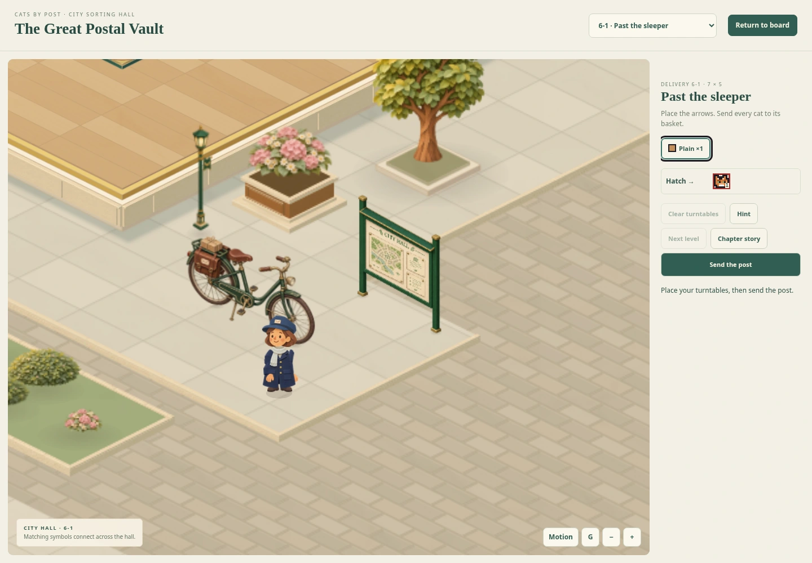

Cats by Post · Great Postal Vault
Post arrives at the square
A delivery bicycle, a civic noticeboard and one courier give the arrival pavement a little everyday life. Connected footways bring the surrounding buildings into the scene.
Matched game captures: the same camera, puzzle, controls and scene time. Choose Phone hall to see the full-height composition.
A small postal arrival corner

The bicycle carries a parcel and a leather mailbag. Beside it, a municipal noticeboard gives the courier somewhere to check the route.
Both stand on the same pavement plane as the hall. The courier walks over, pauses at the board, then returns to the bicycle.
The new details sit outside the clear entrance route. Across the square, looser planting and smaller flower clusters soften the formal beds.
A quiet moment outside
The complete forty-eight-second outdoor loop, recorded from the game. Motion can be switched off in the playable hall.
The full-height phone scene
The postal corner belongs to the extra space revealed below the hall. The surrounding buildings now meet connected footways, while the board stays central and clear.
The comparison includes short and tall phones, the largest puzzle and grayscale. The thirty-two-second phone clip records the scene without the control overlays.
This is the next scene checkpoint for review; the selected concept remains the broader artistic target.
The selected direction